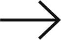

Your browser does not support the video tag.
안녕하세요.
@@
님.
최근 화나는 일이 있었나요? 혹은 속상한 일은요?
우리는 가끔 이유없이 화나거나 인정하고 싶지 않은 감정을 느끼는 상황을 겪습니다.
이럴 땐, 이 모든 원흉을 탓 할 누군가를 필요로 할지도 모르지요.
그렇다면 당신의 건강한 마인드 라이프를 위해, 우리끼리의 빌런을 한 명 만들어보는건 어떨까요?
가상의 몽타주를 완성하여 무엇이든 탓 해 보세요!
Okay.
I'm
Ready
